대구중노회, 설립 40주년 감사예배·음악회 열고 ‘다가올 40년’ 비전 다짐
6일 대구동부교회당서 “지나온 40년은 은혜로, 다가올 40년은 비전으로”… 총회·인근 노회 인사 축하 이어지고 연합찬양으로 마무리
대한예수교장로회 대구중노회(노회장 오세태 목사)가 6일 오후 6시 30분 대구동부교회당(대구 중구 달구벌대로 2225)에서 ‘설립 40주년 기념 감사예배 및 음악회’를 열고, 지난 40년의 은혜에 감사하며 앞으로 40년의 비전을 함께 그렸다.
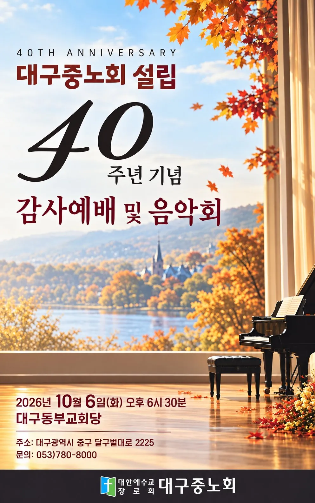
무대 전면에는 ‘서로 사랑하며 마음을 같이하여 격려하는 해’(히 10:24)라는 표어와 ‘하나님은 사랑이시라’ 문구가 내걸렸다. 행사는 감사예배에 이어 음악회로 진행됐다.
노회장 사회로 드린 감사예배
예배는 노회장 오세태 목사의 사회로 시작됐다. 참석자들은 묵도에 이어 찬송가 208장 ‘내 주의 나라와’를 다 같이 부르며 예배의 문을 열었고, 부노회장 이종성 장로가 대표로 기도했다.
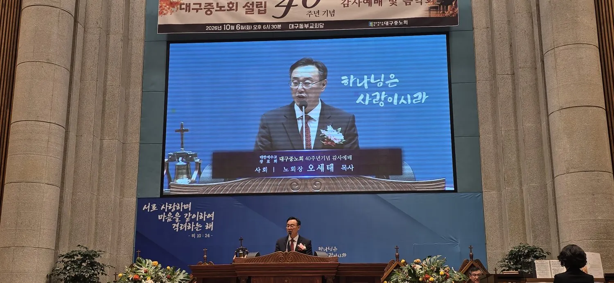
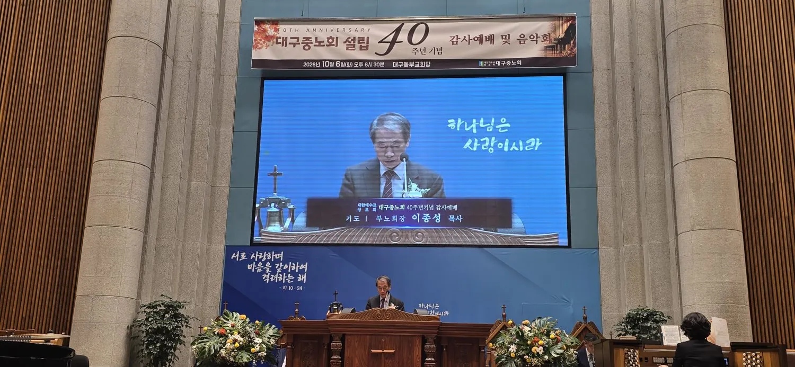
이어 노회서기 석진욱 목사가 사도행전 20장 28~32절을 봉독했다. 바울이 에베소 교회 장로들에게 하나님께서 피로 사신 교회를 보살피라고 당부한 대목으로, 교회를 돌보는 직분의 책임을 되새기게 하는 말씀이다.
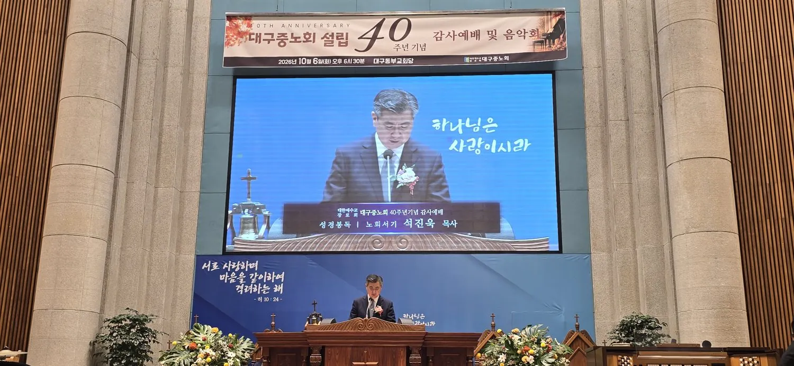
| 순서 | 담당 |
|---|---|
| 사회 | 노회장 오세태 목사 |
| 기도 | 부노회장 이종성 장로 |
| 성경봉독 (행 20:28~32) | 노회서기 석진욱 목사 |
| 설교 | 40주년 준비위원장 윤성권 목사 |
| 축사 | 송기섭 목사 · 권영식 장로 · 이정근 목사 |
| 내빈 소개 및 광고 | 40주년 준비위원회 총무 이윤찬 목사 |
| 축도 | 증경노회장 신현진 목사 |
“지나온 40년은 은혜로, 다가올 40년은 비전으로”
설교는 40주년 준비위원장 윤성권 목사가 맡았다. 윤 목사는 마태복음 26장 26~30절을 본문으로 ‘지나온 40년은 은혜로, 다가올 40년은 비전으로’라는 제목의 말씀을 전했다. 본문은 예수께서 제자들과 성찬을 나누신 대목으로, 이 제목은 이날 행사 전체의 주제를 압축해 보여 주었다.
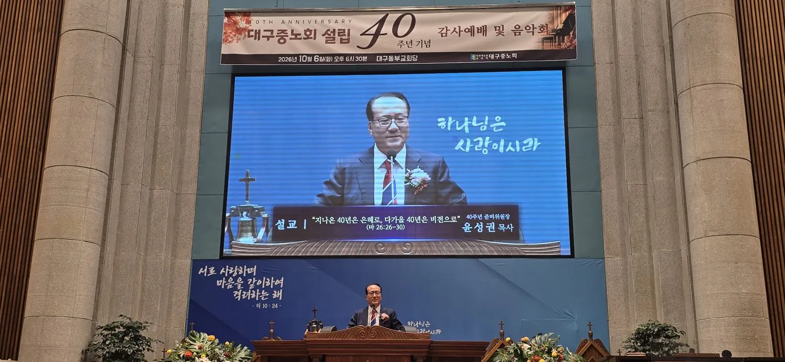
지나온 40년은 은혜로, 다가올 40년은 비전으로 — 윤성권 목사 설교 제목 (마 26:26~30)
기념영상으로 되짚은 40년의 발자취
설교 후에는 40년의 걸음을 담은 기념영상이 상영됐다. 영상에는 총회 총무 박용규 목사가 등장해, 대구중노회가 지난 40년의 역사와 전통을 잘 계승하고 앞으로도 교회와 복음의 본질을 지키는 노회가 되기를 당부하는 취지의 축하 메시지를 전했다.
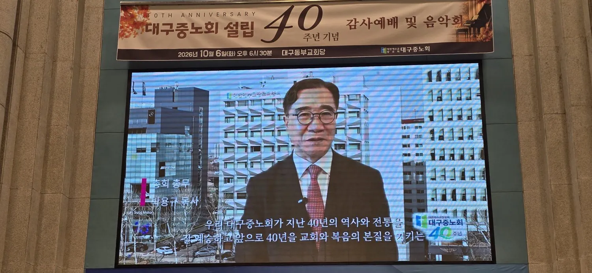
영상은 지난 40년을 되짚는 데 그치지 않고, 이제 노회가 해야 할 일이 무엇인지 묻는 대목으로도 이어졌다.
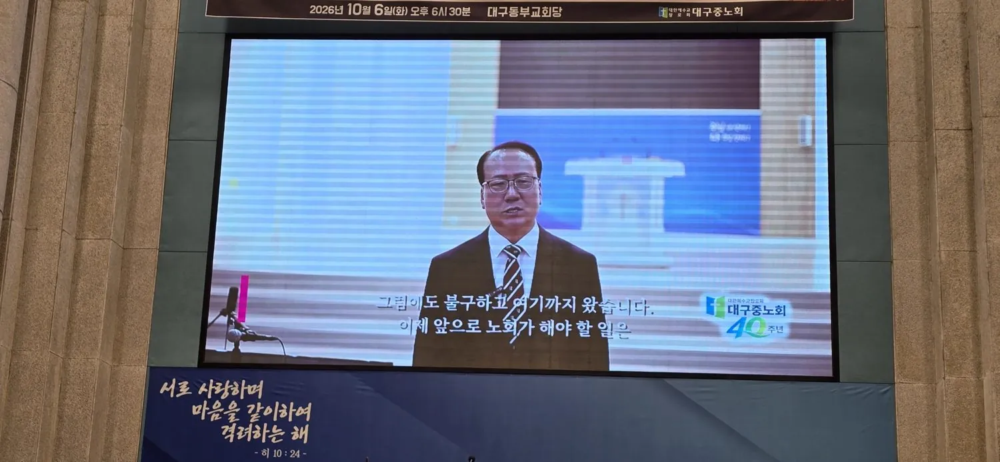
영상은 노회가 걸어온 활동도 함께 소개했다. ‘연금활성 우수노회장’ 시상 장면에는 오세태 노회장이 소개됐고, 40주년을 기념해 열린 교회연합 체육대회 현장도 화면에 담겼다. 체육대회 장면에는 한자리에서 땀 흘리고 웃으며 서로를 끌어안았던 시간이라는 자막이 더해져 노회 산하 교회들의 연합과 친교를 보여 주었다.
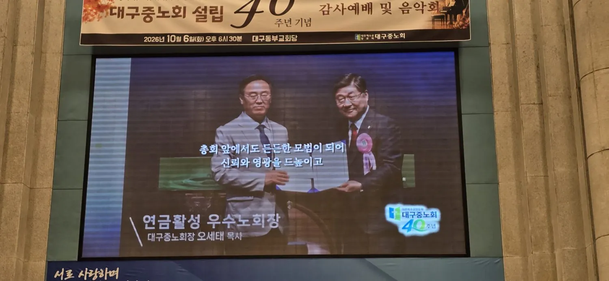
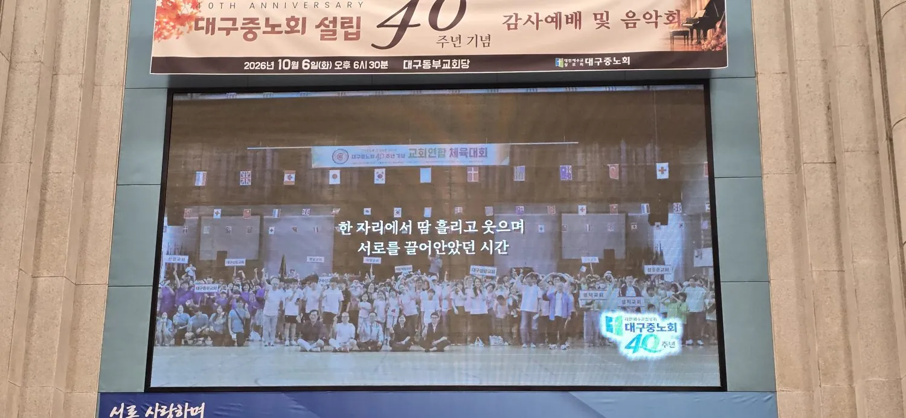
총회와 인근 노회에서 전한 축하
축사에는 제111회기 부총회장 송기섭 목사, 총회 증경부총회장 권영식 장로, 대구수성노회장 이정근 목사가 차례로 나서 설립 40주년을 맞은 대구중노회에 축하와 격려를 전했다.
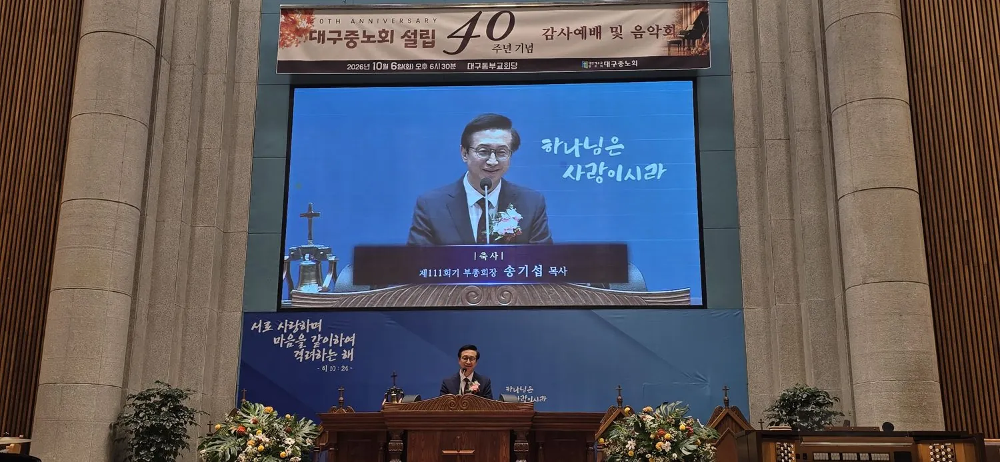
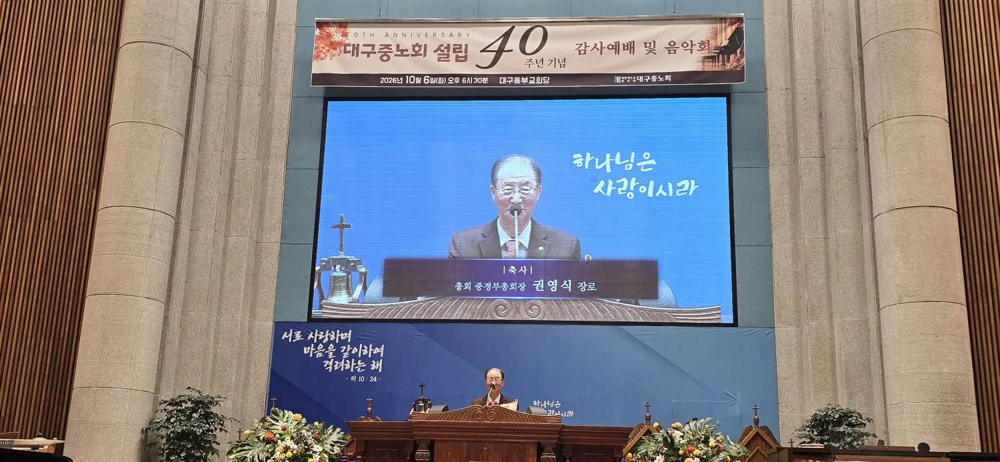
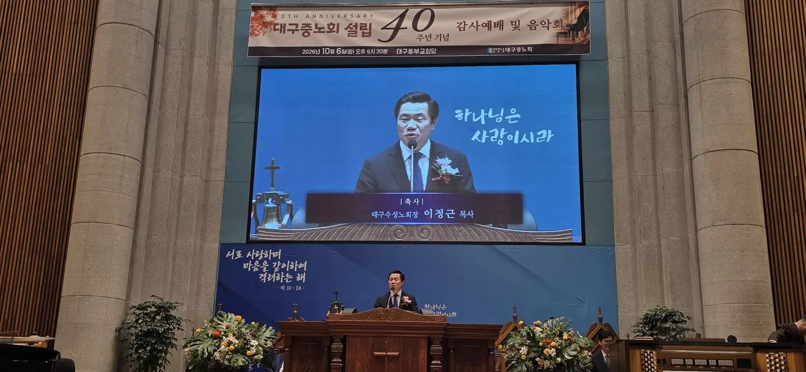
이어 40주년 준비위원회 총무 이윤찬 목사가 내빈 소개와 광고를 맡았다. 참석자들은 찬송가 430장 ‘주와 같이 길 가는 것’을 다 같이 부르며 앞으로의 걸음을 주님과 함께하겠다는 마음을 모았고, 증경노회장 신현진 목사의 축도로 감사예배를 마쳤다.
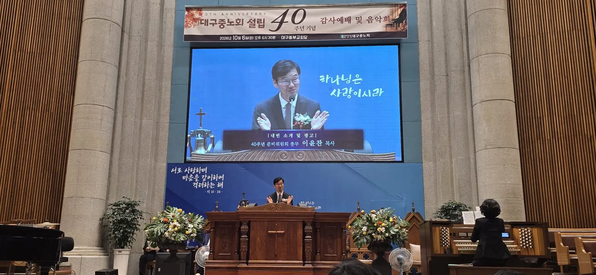
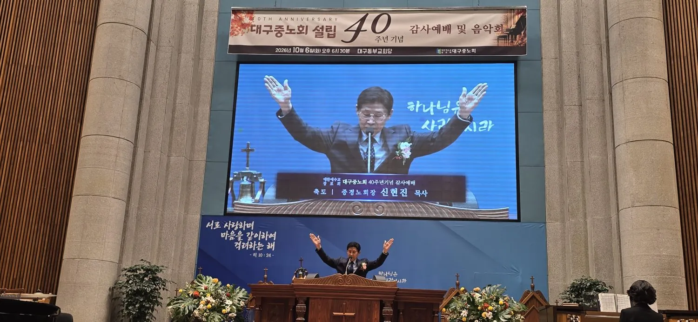
찬양으로 이어진 음악회
감사예배를 마친 뒤 이어진 음악회는 이보람 아나운서의 진행으로 열렸다. 장로회 회장 김효성 장로가 개회기도를 드렸고, 무대에는 어린이 연합찬양대부터 대학 출신 연주자들의 앙상블, 성악가 부부, 장로찬양단까지 다양한 팀이 차례로 올랐다. 순서지에 따른 무대는 다음과 같다.
- 대구중노회 어린이 연합찬양대 — 노회 산하 교회 주일학교 어린이들로 구성. ‘영원히 찬양드리세’, ‘주와 같이 길 가는 것’ (지휘 공선빈, 반주 오혜민)
- KMU앙상블 — 계명대 음악공연예술대학 출신 연주자들로 구성된 팀. ‘은혜’, ‘주의 은혜라’
- 한승헌 집사 특별찬양 — ‘소망의 바다’, ‘키보드 워십’
- 대구중노회 목사 부부합창단 — ‘나의 평생에 가장 복된 일은’, ‘말씀 앞에서’ (지휘 이재범 목사, 반주 이선영 사모)
- 신배윤·정지선 부부성악가 특별찬양 — ‘The Prayer’, ‘감사의 노래’
- 둘로스 장로찬양단 — ‘구주여 광풍이 불어’, ‘송축해 내 영혼’, ‘주예수 나의 산소망’ (지휘 구본삼 장로, 반주 이지희 권사)
- 연합찬양 — ‘은혜’
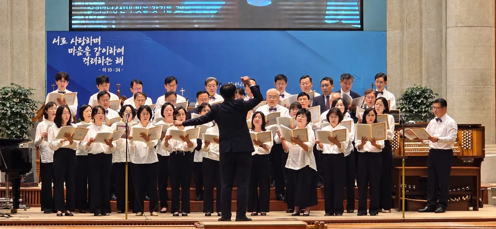
목사 부부합창단, 지휘자의 손끝에 맞춘 찬양
이 가운데 대구중노회 목사 부부합창단의 무대는 영상에도 담겼다. 이재범 목사의 지휘에 맞춰 단원들은 악보를 펼쳐 든 채 피아노 반주와 함께 찬양을 이어 갔다. 여성 단원은 흰 상의에 검은 하의, 남성 단원은 흰 셔츠에 나비넥타이 차림으로 무대에 서 한목소리를 냈고, 대형 화면에는 찬양 가사가 함께 비쳤다.
한 목소리로 드린 연합찬양
음악회의 마지막 순서는 연합찬양 ‘은혜’였다. 찬양이 시작되자 무대 위 찬양대와 연주자들은 물론, 내빈석과 회중석의 참석자들도 자리에서 일어나 손을 들거나 박수를 치며 함께 노래했다. 무대 한쪽에서는 흰옷 차림의 어린이 찬양대원들도 목소리를 보탰고, 바이올린과 트럼펫 등 악기 연주가 찬양을 받쳤다.
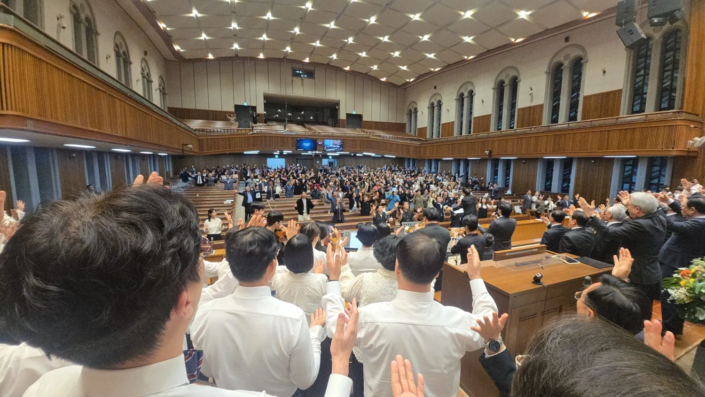
지난 40년의 은혜를 노래로 고백하는 이 장면은 이날 행사의 표어인 ‘서로 사랑하며 마음을 같이하여 격려하는 해’를 눈앞에서 보여 주는 듯했다. 음악회는 노회장 오세태 목사의 축도로 마무리됐다.
40년을 감사하고, 다음 걸음을 격려하며
순서지에 실린 조직도에 따르면 대구중노회는 노회장 아래 임원단과 대구중목사회·장로회·남전도회연합회·여전도회연합회·CE연합회·주교연합회 등 6개 산하기관, 중·남·동 3개 시찰회로 이뤄져 있다. 이날 예배는 이 모든 지체가 한자리에 모여 지난 40년의 은혜에 감사하고, 서로 격려하며 다가올 40년을 향해 나아가자는 다짐을 나눈 자리였다.